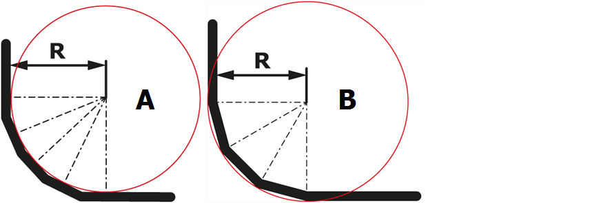

V tomto dialogu se zaznamenají technologické údaje ohýbání pro ohýbaný profil. Dialog je rozdělen do následujících záložek:
V této záložce mohou být vybrány údaje k profilu nebo znovu zaznamenány. Údaje platí pro všechny ohyby profilu.
Mají-li být pro jednotlivé ohyby použity jiné nástroje, metody ohýbání nebo délky ohybu, mohou být tyto definovány v záložce Ohyby.
- Měřicí systém
- Materiál
- Tloušťka plechu
- Délka ohybu
- Stroj
- Metoda ohýbání Jako metoda ohýbání se označuje 3bodové ohýbání, volné ohýbání a ražení.
- Horní nástroj
- Spodní nástroje
- Podrobnosti k horním/spodním nástrojům
Určuje použitý měřicí systém (mm/inch).
Určuje materiál. Lze vybrat všechny materiály zaznamenané ve Správci.
Určuje tloušťku plechu.
Určuje délku čáry ohybu.
Určuje ohýbací stroj. Lze vybrat všechny stroje zaznamenané ve Správci.
Určuje metody ohýbání – volné ohýbání, 3bodové ohýbání 3bodové ohýbání způsobuje opakovatelné a velmi přesné úhlové nastavení klínovým systémem. Úhel ohybu se stanoví oběma vstupními hranami, spodním nástrojem a dolní částí spodního nástroje. 3 body leží na stejné straně plechu. Úhel se nastavuje výškově přestavitelným čepem ve spodním nástroji. Deformace beranu se vyrovná hydraulickým polštářem. Každý ze segmentovaných horních nástrojů pracuje nezávisle na hydraulickém polštáři a je zajištěn proti přetížení. Proces ohýbání je ukončen až poté, co materiál dolehne na dolní část spodního nástroje a horní nástroje se zanoří do hydraulického polštáře. nebo ražení podle použitého ohýbacího stroje.
Určuje horní nástroj pro ohýbací stanici. Lze vybrat všechny horní nástroje zaznamenané ve Správci.
Určuje spodní nástroj pro ohýbací stanici. Lze vybrat všechny spodní nástroje zaznamenané ve Správci.
V tomto dialogu se uvádějí další atributy k vybraným horním a spodním nástrojům.
Pro každý řez může být převzata samotná délka ohybu nebo profilu. Dále se pro každý řez zobrazí délka přířezu.
V této záložce mohou být definovány údaje pro vybraný ohyb. Údaje se projeví jen na aktuálním ohybu.
- Úhel
- Délka
- Délka ohybu
- Metoda ohýbání
- Horní nástroj
- Spodní nástroj
- Zaoblovací nástroje...
- Poloměr kroku Poloměr kroku je ohyb ramena, jehož úhlu a poloměru je dosaženo několika ohyby.
- Poloměr
- Zkrácení Jako zkrácení se označuje redukce rozměru ramena ohýbání na ohýbaném dílci. Ohybem se zvětší délka dílce. Proto musí být rameno ohybu zase zkráceno o tento rozměr u řezaného dílce. Zkrácením se toto prodloužení zase kompenzuje.
Určuje úhel ohybu.
Určuje délku vybraného ramena.
Určuje délku čáry ohybu. Může být zadána vlastní hodnota nebo převzata hodnota řezu.
Info: Možnost jako řez přebírá délku ohybu ze záložky Řez.
Určuje metody ohýbání – volné ohýbání, 3bodové ohýbání nebo ražení podle použitého ohýbacího stroje.
Info: Hodnota Standard přebírá metodu ohýbání ze záložky Profil.
Určuje horní nástroj pro ohýbací stanici. Lze vybrat všechny horní nástroje zaznamenané ve Správci.
Info: Hodnota Standard přebírá horní nástroj ze záložky Profil.
Určuje spodní nástroj pro ohýbací stanici. Lze vybrat všechny spodní nástroje zaznamenané ve Správci.
Info: Hodnota Standard přebírá spodní nástroj ze záložky Profil.
Tímto tlačítkem se na základě předem zadaného poloměru vybírá z vhodných kombinací nástrojů.
Ale nemůže být zadán libovolný vnitřní poloměr, protože tohoto poloměru nemůže být dosaženo dostupnými nástroji.
Pro každý ohyb může být vždy definováno krokové ohýbání. Je-li vybrána možnost Poloměr kroku, otevře se dialog, ve kterém může být definováno krokové ohýbání.
Typ
Hrany a plochy krokového ohýbání neprobíhají zcela paralelně k vlastnímu poloměru ohybu. Touto možností se stanoví, zda poloměr ohybu probíhá na vnitřní (A) nebo vnější straně (B) krokového ohýbání. Standardně se používá atribut Tangenciální vnitřní.
Fig.: Tangenciální vnitřní/vnější

Vnitřní poloměr
Určuje vnitřní poloměr (R) krokové ohýbání.
Počet ohybů
Touto možností se stanoví počet ohybů, se kterými má být poloměr ohýbán. Tlačítkem Maximum se maximálně možný počet ohybů zaznamená do pole Počet ohybů.
Čím vyšší je počet ohybů, tím přesnější je poloměr ohybu a náročnější ohýbání.
Info: Maximálně možný počet ohybů je závislý na nastavení nástrojů.
Je-li aktivní možnost Automaticky, pak se poloměr ohybu stanoví výběrem ohýbacího nástroje. Není-li možnost aktivní, může být zaznamenána hodnota definovaná uživatelem.
Je-li aktivní možnost Automaticky, pak se zkrácení stanoví výběrem ohýbacího nástroje. Není-li možnost aktivní, může být zaznamenána hodnota definovaná uživatelem.
Zde jsou zobrazena označení a uvedeny dodatečné údaje k sestavenému profilu. Informační řádky a popis mohou být zaznamenány před prvním uložením profilu.
Info: Nově sestavený profil musí být uložen pod názvem dříve, než se zobrazí název, datum vytvoření a údaje k revizi.